Onsight Climbing
I developed a concept app for rock climbers to track their progress.
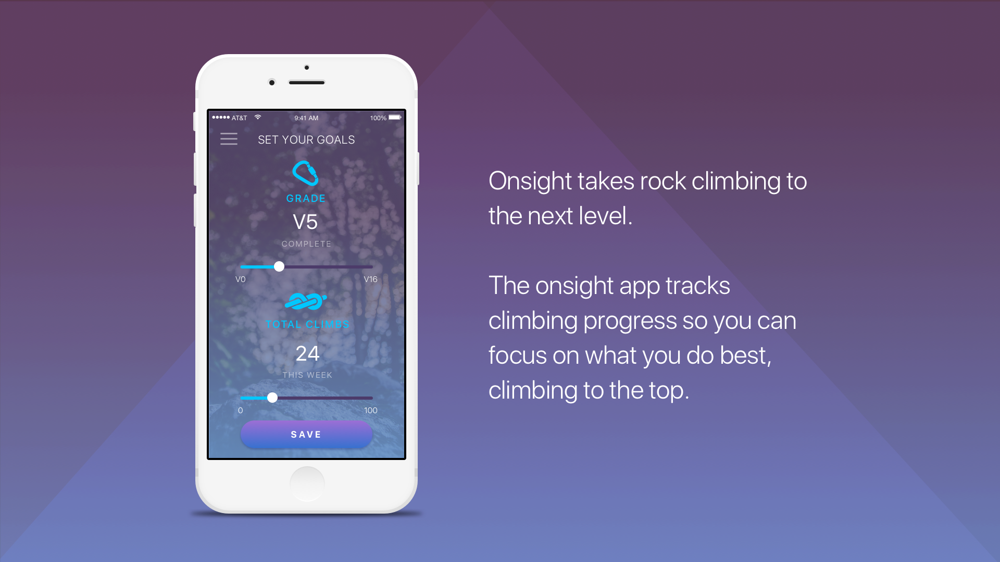
The Problem
Rock climbers are always comparing themselves with their past performance. The frustration comes when progress seems to be stagnant and there is no objective way to view growth over time.
The Research
I conducted user interviewers with a variety of different rock climbers.
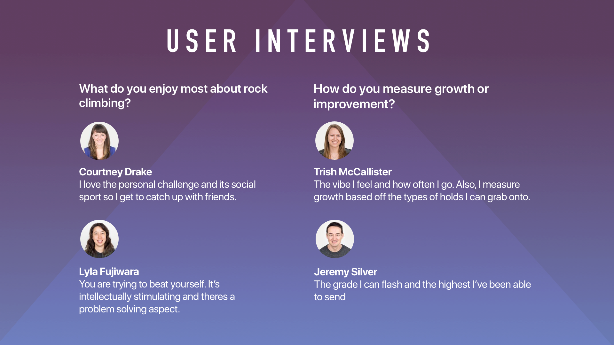 A few of these climbers were were not interested in progressing in the sport and mainly went climbing to connect with friends. Because these “casual climbers” didn’t experience the problem I was trying to solve, I decided to create a persona based on more motivated climber.
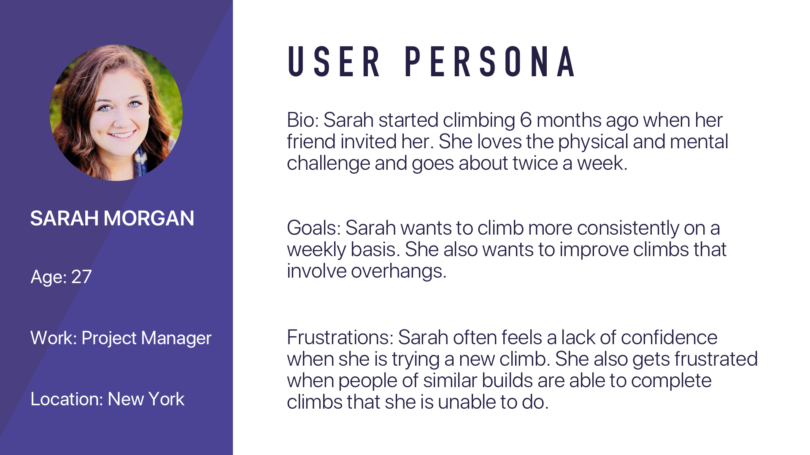 I conducted a competitive analysis. I wanted to find other companies that were trying to tackle the same problem for rock climbers. Each of the companies I found took a different approach with helping rock climbers track their progress.
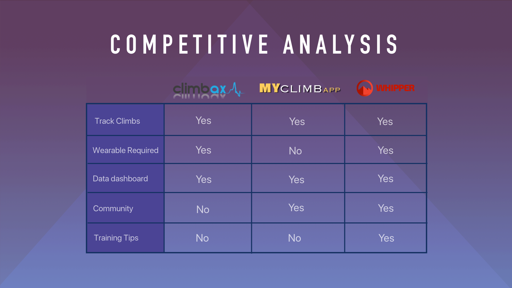
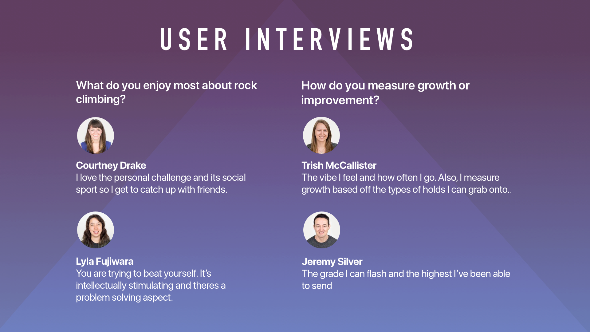 A few of these climbers were were not interested in progressing in the sport and mainly went climbing to connect with friends. Because these “casual climbers” didn’t experience the problem I was trying to solve, I decided to create a persona based on more motivated climber.
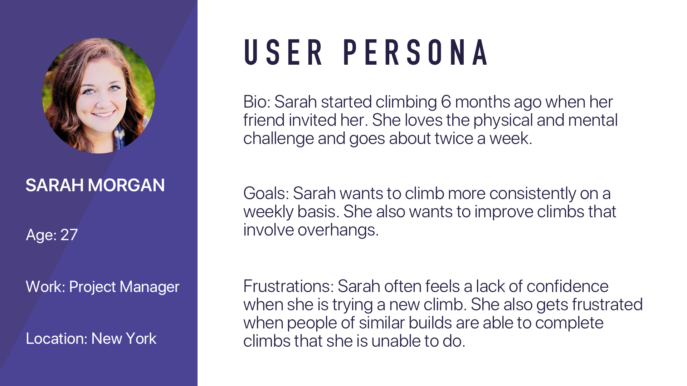 I conducted a competitive analysis. I wanted to find other companies that were trying to tackle the same problem for rock climbers. Each of the companies I found took a different approach with helping rock climbers track their progress.
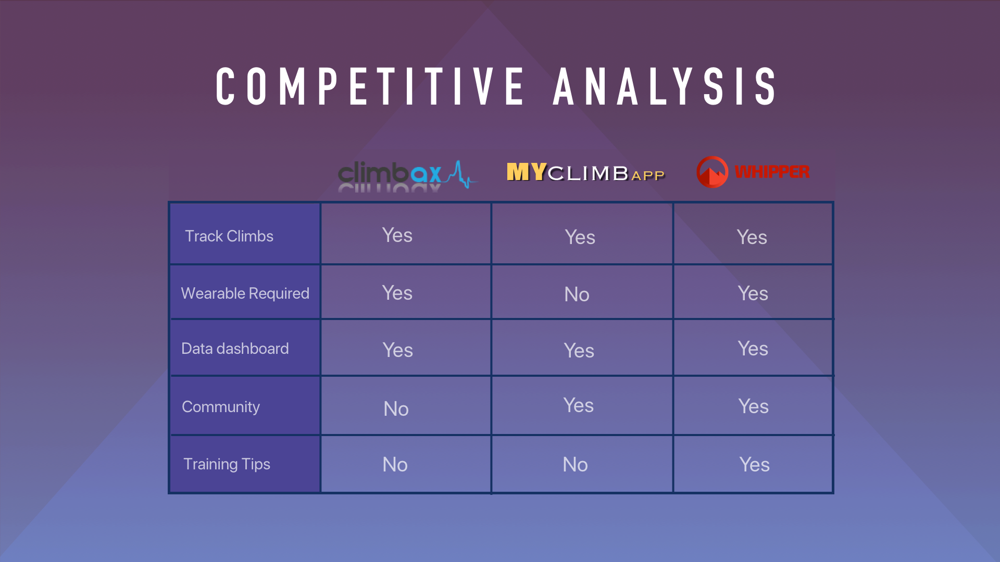
Feature Prioritization
I refined the problem I was trying to solve to avoid focusing on less important features
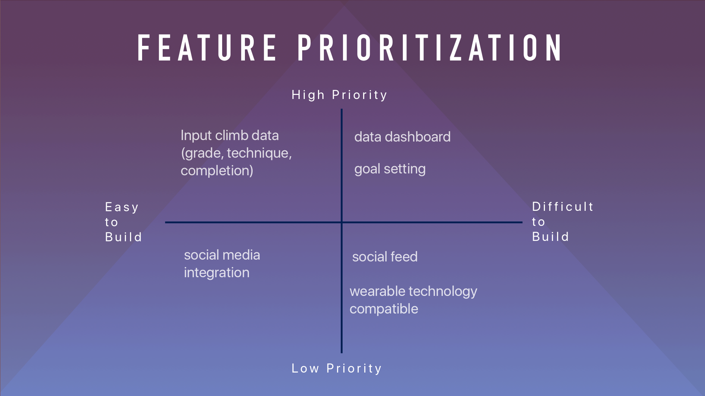
I made a conscious choice not to incorporate social features because the problem I was solving was about personal progress instead of social sharing.
I decided to focus on two main features to meet my users needs: tracking climbs and the data dashboard.
The Design Process
I started sketching the apps three main views: home, entering a climb, and the data dashboard.
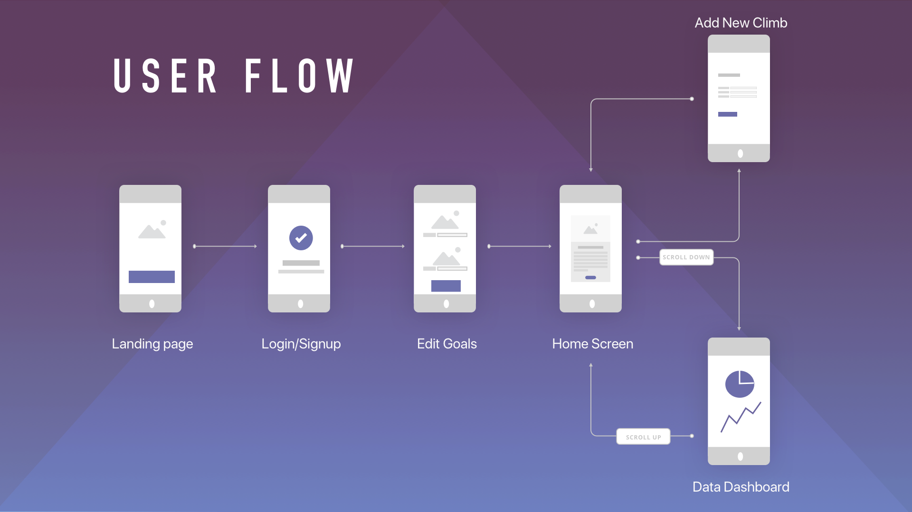
In the process of creating initial wireframes, I was able to organize the hierarchy of information for the app.
I created a prototype and conducted a round of usability testing. Users progressed through the app as I took notes on any roadblocks they experienced.
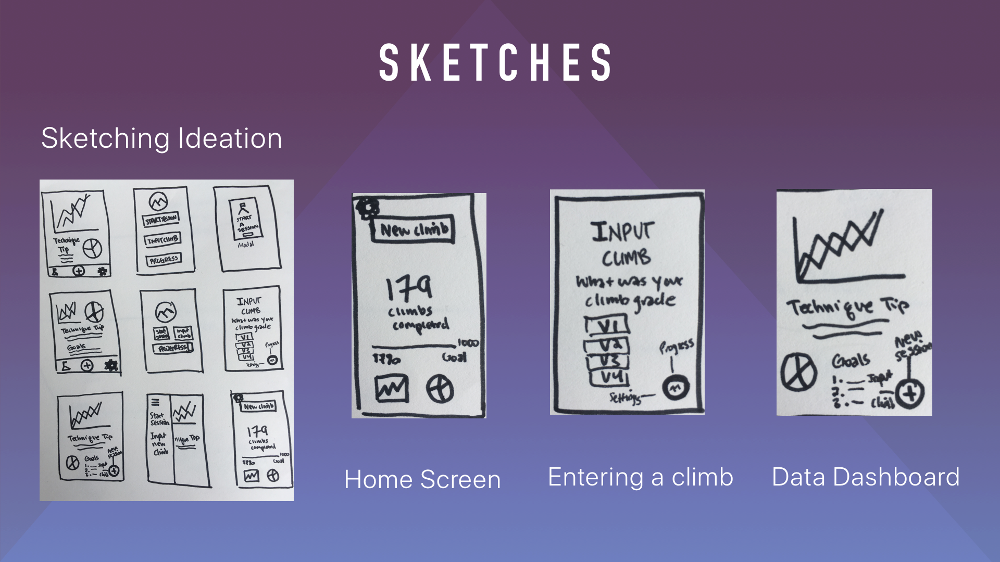
Many of the testers did not connect with the data visualizations in the initial prototype. The use of colors did not communicate significant meaning and the data dashboard was too overwhelming. I needed to figure out how to communicate climbing data in a simple and meaningful way.
Final Solution
On-boarding and Home Screen: Account set up, goal setting, home screen
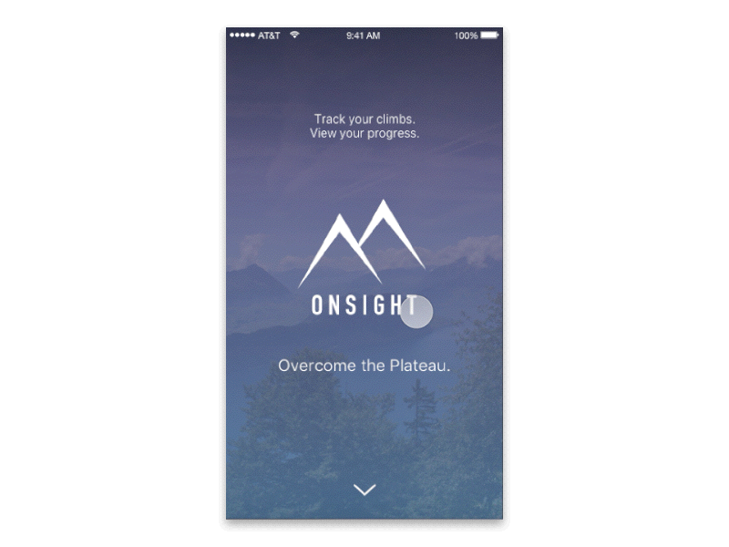 Entering a Climb: Data entry for individual climbs (climb grade, attempted vs. completed, and additional comments)
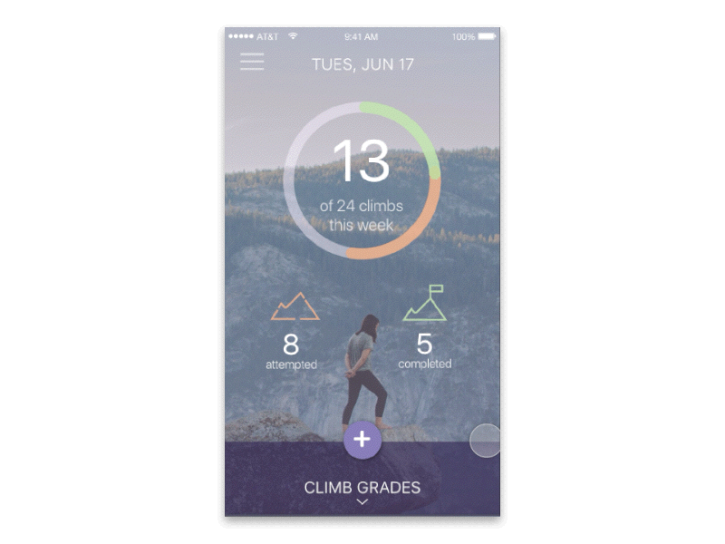 Data Dashboard: Data visualizations (categorized by attempted, completed, and goals)
 Read more about Onsight Rock Climbing App here.
Read more about Onsight Rock Climbing App here.
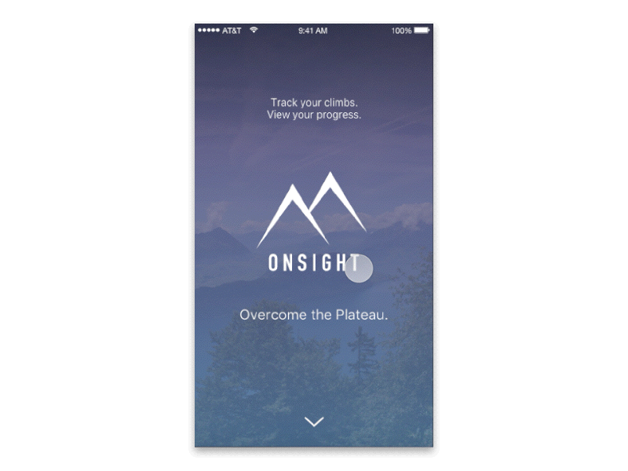 Entering a Climb: Data entry for individual climbs (climb grade, attempted vs. completed, and additional comments)
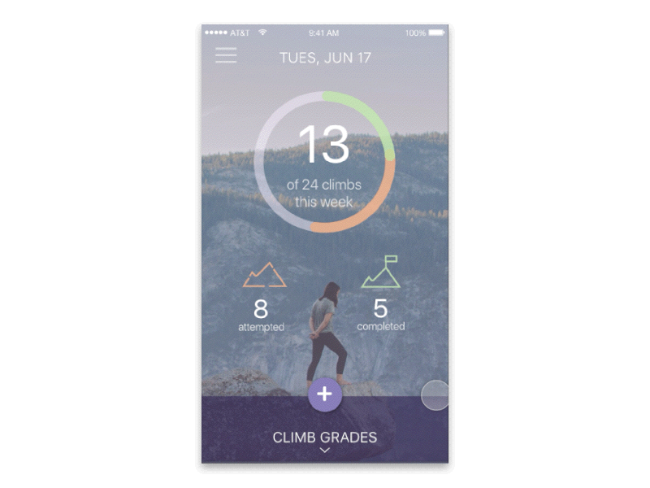 Data Dashboard: Data visualizations (categorized by attempted, completed, and goals)
Read more about Onsight Rock Climbing App here.